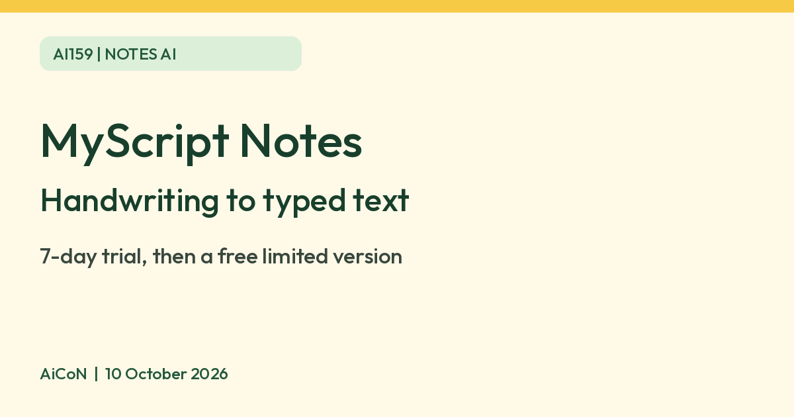

MyScript Notes: handwriting to text, a 7-day trial then a limited free version
MyScript Notes turns handwriting into typed text and adds AI summaries and quizzes. There is a 7-day free trial, then a free limited version. Check the price in your store.

What it is
MyScript Notes (formerly called Nebo) is a note-taking app where you write by hand with a compatible pen or stylus. MyScript says its handwriting recognition turns your writing into typed text, converts rough shapes into neat ones, and lets you search handwritten notes. It also has AI features: Summarize, Explain and Quiz on Android, plus Chat and Study sets on iOS.
Is it free
Partly. MyScript's FAQ says you can start with a 7-day free trial of everything. After that you either pay to keep all features or "continue with a free limited version". MyScript does not say on that page what the limited version leaves out, and it says prices vary by region and promotion, so there is no single verified price. The India App Store lists Full Access offers at ₹149, ₹599 and ₹1,999, plus legacy packs and full-version purchases. The listing does not clearly label the duration of each Full Access offer. Treat these as listed offers, not a checkout quote. Check the plan, billing period, renewal and final price before you pay. The iOS version history says you can start the trial before choosing a subscription or lifetime purchase.
Is it available in India
Yes, as far as the stores show. The app has a live India App Store listing (Free, with in-app purchases) and a live Google Play listing. Android installation still depends on your device and Play account region. MyScript says it is sold only on the App Store and Google Play. We did not test it.
How to try it
- Install MyScript Notes from the App Store or Google Play.
- Write a short note by hand and use the convert option to turn it into text.
- Use the trial to decide whether the paid version is worth it for you, and check what the free version keeps.
Limits to know
- The full app is a 7-day trial. The free version afterwards is limited.
- AI features differ by platform. Chat and Study sets are iOS only for now, per MyScript.
- MyScript says cloud sync, web sharing and AI features need a free MyScript account.
- AI summaries and quiz questions can be wrong. Check them against your own notes.
- The privacy policy says notes stay locally on your device by default and are not automatically backed up. Content you insert into AI features is sent to OpenAI. A separate opt-in to share content with MyScript can be used to train and improve its algorithms. Turning that option off does not delete previously shared content; deletion must be requested. Do not send confidential notes to AI without permission.
- The India App Store requires iOS/iPadOS 17 or later. Check your device before installing.
- The official recognition-language list does not include Hindi or Malayalam. Do not assume all Indian languages are supported.
- Existing Nebo lifetime purchases remain valid, per MyScript; check restore purchases before buying again.
- We did not test it ourselves.
Frequently asked questions
Do I have to pay after the trial?
No. MyScript says you can continue with a free limited version.
Sources: MyScript Notes, India App Store listing, Google Play listing, MyScript privacy policy. Checked 10 October 2026.